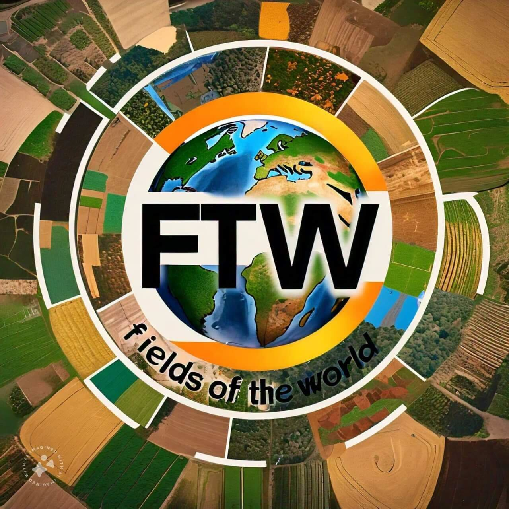

Fields of The World (FTW) is an open, community-driven initiative to advance global agricultural intelligence by building and sharing tools, datasets, and models for field boundary detection. Most countries don't have comprehensive maps of their agricultural fields, and even fewer have up-to-date information on what crops are growing or whether sustainable practices are being used.
Our approach leverages Earth observation data and AI to automatically detect field boundaries at scale. By combining open satellite imagery with machine learning, we aim to build a global, open, and regularly updated map of the world's fields.